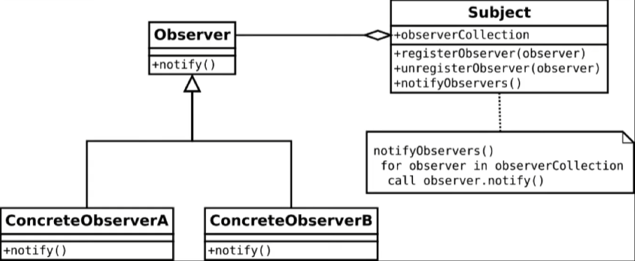

Developers encounter problems of some sort on a daily basis, especially with programming. Something fails to compile, a program does not run as it is intended, an error somewhere crashes a program. The recurrence of these issues eventually leads to developers facing the same types of issues, and dealing with each specific instance of the issue can become quite tedious. Rather than having to devise a new solution for the same issue, it would be much more optimal (and much less time-consuming) to use an existing general solution that you can change to fit your current problem. Luckily, these general solutions already exist: design patterns. As architect Christoper Alexander described, a design pattern “describes a problem that occurs over and over in our environment, and then describes the core of the solution to that problem, in such a way that you can use this solution a million times over, without ever doing it the same way twice.” This description is very wordy, though, so here is an example.
Picture this: after finishing a long day of work as a software developer, you return home, weary and famished. You open the news app on your phone to catch up with the happenings of the world while you spent twelve hours attempting to center a div, only to find that every major news network is reporting on social media platform Tweeter losing almost 50% of its employees following its acquisition by business magnate Melon Busk. How does every network report on the exact same topic? you wonder. After doing some research, you learn that those networks subscribe to a news agency that notify the networks whenever a new story is received. Wow, you think to yourself, this is just like an observer design pattern!
The observer pattern outlines the problem of a set of objects, or “observers”, that need to be notified when a change of state/event occurs to another object, or the “subject”. The general solution to the problem is as follows: the subject holds a collection of observers and notifies each observer when there is a change of state/event. If objects need to be notified of the subject’s change of state, they subscribe to the subject, thereby joining its observer collection (akin to subscribing to a company newsletter). In the aforementioned example, news agencies (the subject) notify subscribed news networks/channels (the observers) of the event of receiving a new story, saving news networks the time of looking for stories themselves. Using the observer pattern, a recurring problem - which, as demonstrated, can even be applied outside of software development in fields like reporting - can now be solved much more efficiently by using a core solution that can be molded to solve each instance of the problem.

Though the news example is outside the field of development, design patterns are indeed applicable in programming, even in the simple case of pressing a button. For example, my group’s final project for ICS 314, involving parking reservation for UH Manoa’s Zone 20 parking structure, uses an event listener that is notified when a button changes its state from “unpressed” to “pressed”, invoking a method that deletes the stall with which the button is associated. React hooks, like useTracker(), subscribe React components to Meteor data, allowing those React component observers to update whenever a change of state is reported by the Meteor data subject (e.g., displaying the updated stall reservations on a table after removing a stall). Although we could have devised two different solutions to two somewhat unrelated issues, realizing the applicability of the observer problem/design pattern allows for the use of one general solution to apply in two different ways, saving time that can be allocated for other purposes (like centering a div).
Due to various time constraints, developers often need to churn out applications quickly, and with the nature of the development field, these applications often encounter the same issues. Learning to notice and apply design patterns to solve these repeating issues saves time and resources for solving more unique or important problems. It is much better to use what already exists than recreating it every time. As is said, “there is no need to reinvent the wheel.”